Lo que vas a hacer

En este proyecto vas a crear un juego en el que tienes que encontrar un insecto oculto 🐞 en cada nivel. El juego tendrá fondos de pantalla de ‘inicio’ y ‘final’, y un cronómetro ⌚ para mostrar al jugador cuánto ha tardado en encontrar a los insectos.
Vas a:
- Crear niveles para tu juego usando los bloques siguiente fondo y cuando el fondo cambie a.
- Usar un bucle por siempre para seguir ejecutando bloques de código.
- Usar el sensor cronómetro para que el jugador sepa cuánto tardó en encontrar a los insectos
ReproducirHaz clic en el insecto para iniciar el juego. Intenta encontrar el insecto en cada nivel. ¿Se ocultan bien los insectos? Podrás agregar tus propios niveles y hacerlo tan fácil o difícil como quieras. |
1. Pantalla de inicio
Abre el proyecto inicial
| Crea un proyecto nuevo en Scratch. Puedes usar directamente este enlace y Scratch se abrirá en otra pestaña del navegador. |
Cambia el nombre del proyecto y ponle "Encuentra el insecto":
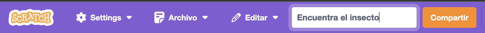
Añade un fondo
Añade a tu proyecto el fondo "Chalkboard", de la categoría "Interiores":
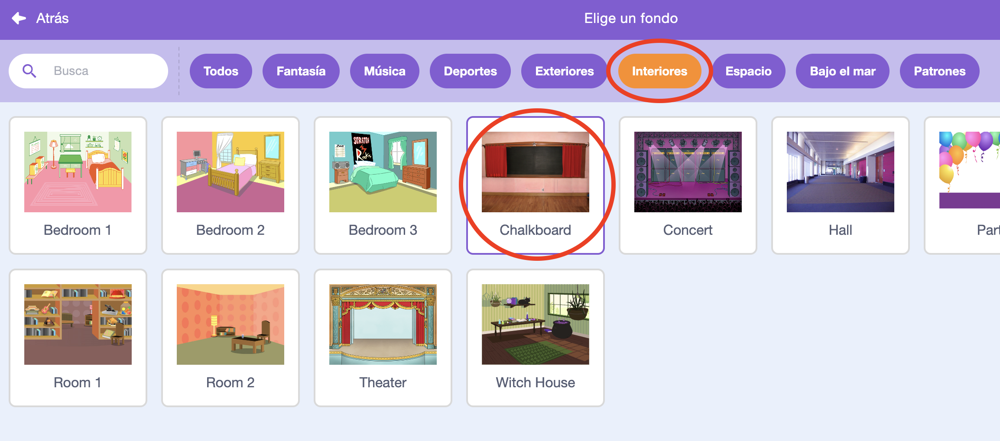
El escenario tiene una pestaña de fondos en lugar de una pestaña de disfraces. Aquí es donde puedes crear imágenes para el fondo:
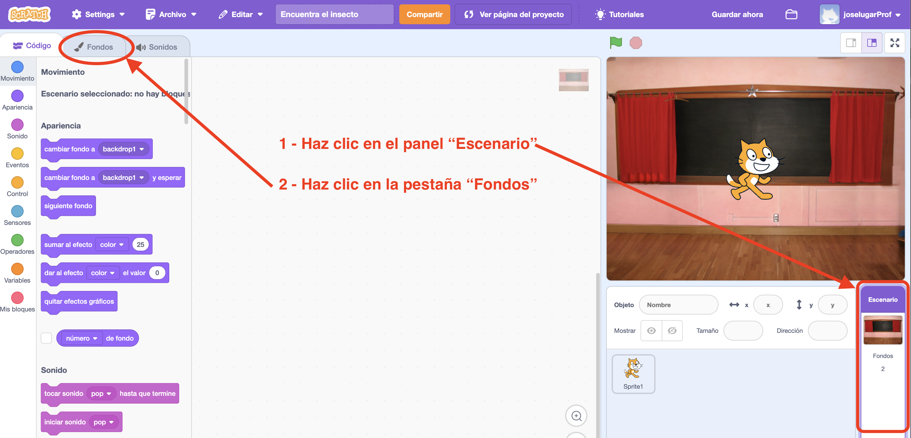
Con esto habrás abierto el Editor de fondos:
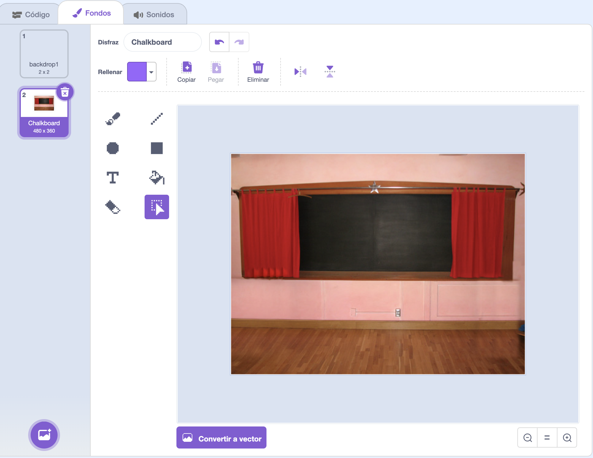
Edita el fondo Chalkboard
Tienes dos fondos ahora mismo, pero solo necesitas el fondo Chalkboard. Para no tener elementos inservibles en nuestro proyecto, vas a eliminar el fondo. Para ello, selecciona backdrop1 y haz clic en el icono Eliminar:
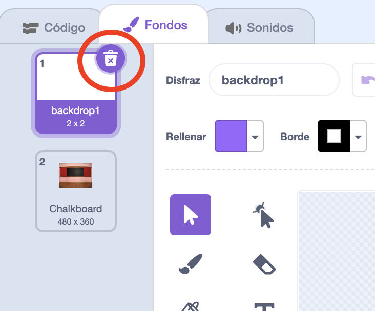
Ahora el fondo Pizarra estará resaltado.
Haz clic en Convertir a vector. Ahora, podrás agregar un texto que puedes mover.
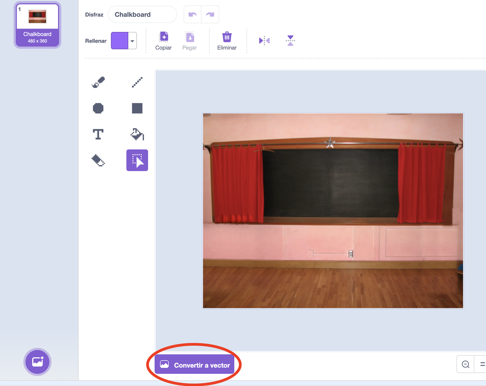
Usa la herramienta texto para agregar el texto encuentra el insecto en la pizarra:
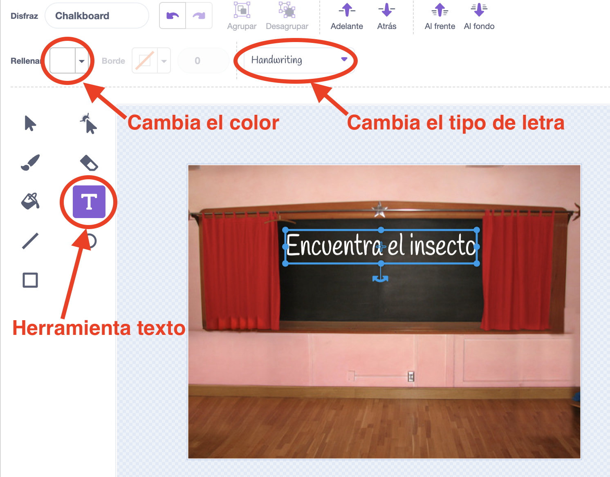
Puedes elegir la fuente y color que quieras usar.
Consejo: Cambia a la herramienta Seleccionar (Flecha) para mover el texto. Para cambiar el tamaño del texto, tómalo de alguna esquina y arrástralo.
Por último, vas a cambiar el nombre del fondo. Le vas a llamar Inicio, en vez de Chalkboard:
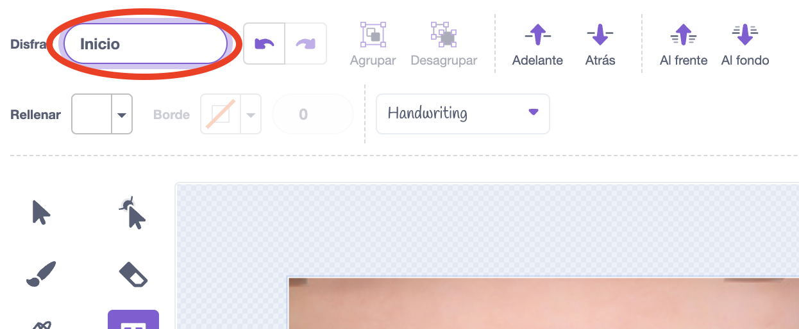
Agrega el objeto insecto
Ahora vas a agregar el objeto insecto. Para buscar todos los insectos disponibles en Scratch, puedes poner la palabra "bug" en el buscador:
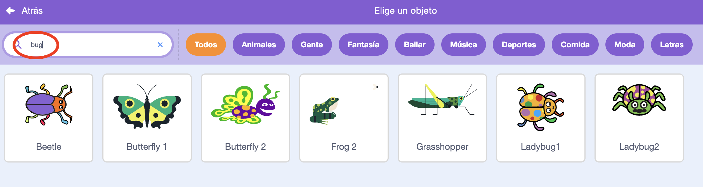
¡Elige el insecto que prefieras para tu proyecto!
Aprovecha ahora para eliminar el objeto del gato porque no los vamos a necesitar en este proyecto.
2. Primer nivel
Ahora vas a añadir un nuevo fondo a tu proyecto para que sea el primer nivel de tu juego. Además, vas a preparar el insecto para ajustar su tamaño y esconderlo cuando pasemos a este fondo.
Añade otro fondo
Añade el fondo Spotlight para que sea tu primer nivel. Lo puedes encontrar en la categoría Musica:
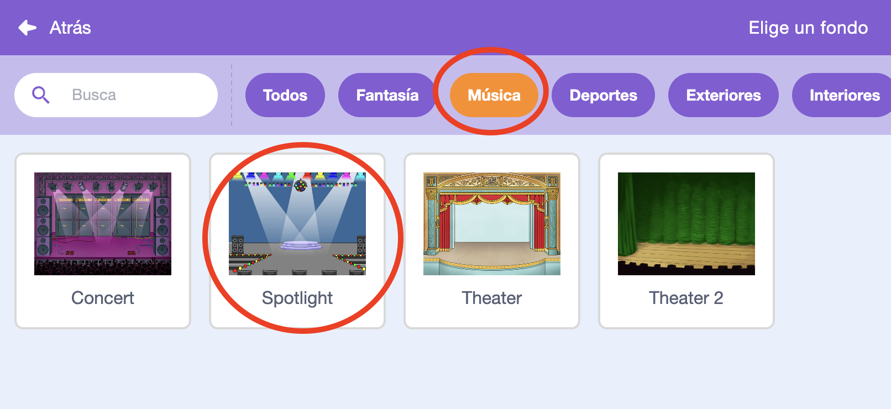
Redimensiona el insecto
Haz clic en el objeto insecto (en mi caso es Beetle, aunque puede que tú hayas elegido otro) en la lista de Objetos. Añade los bloques para cambiar el tamaño de tu insecto cuando el fondo cambie a Spotlight:
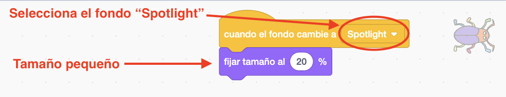
Haz clic en el código para cambiar el tamaño, verás que tu insecto se hace pequeñito. Después, arrastra tu pequeño insecto a un escondite y añade código para posicionarlo. Recuerda que el bloque ir a x: y: te muestra automáticamente las coordenadas x e y de donde hayas colocado a tu insecto. Tus coordenadas serán diferentes de las mías, porque tú habrás elegido otro escondite para tu insecto.
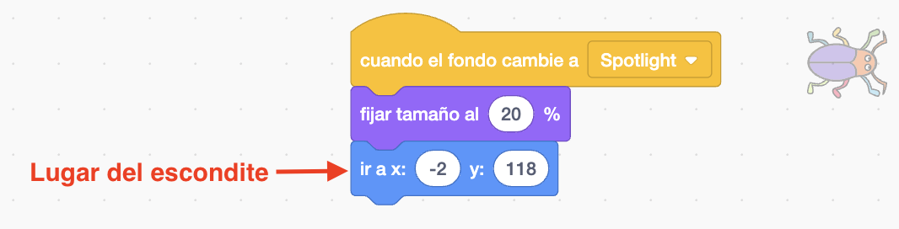
Muévete al siguiente nivel
Cuando el jugador capture al insecto, habrá que pasar al siguiente nivel y eso significa cambiar el fondo. Todavía no has añadido ningún fondo para el siguiente nivel, pero puedes preparar ya el código para pasar a otro escenario cuando llegue el momento.
El bloque siguiente fondo cambiará al próximo fondo que haya, siguiendo el orden en que tengas los fondos en la pestaña "Fondos". Habrá que cambiar cuando el jugador encuentre al insecto, por lo que pondremos el bloque en el evento al hacer clic en este objeto. Para tener un efecto especial sonoro, también podemos añadir un sonido al "capturar" el insecto. El código completo quedaría así:
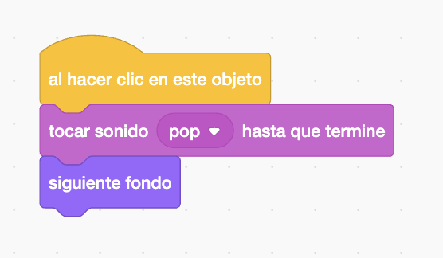
Haz que el juego comience con la pantalla de inicio
Haz clic en el panel Escenario y agrega este código al escenario:
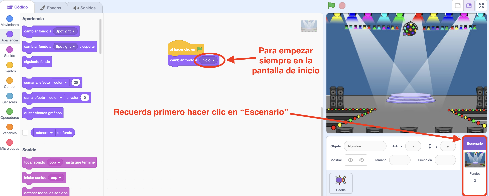
Con esto te aseguras de que, cada vez que se empiece a jugar, aparezca tu pantalla de inicio. Sin embargo, si haces la prueba y le das a la bandera verde, verás que tu insecto sigue estando en su escondite y con tamaño diminuto. Lo que queremos es que, en la pantalla de inicio, el insecto aparezca a tamaño real en la pizarra, así que tendrás que añadir código para conseguirlo.
Para hacerlo, selecciona tu objeto insecto y añádele código que se ejecute cuando el fondo cambie a Inicio:
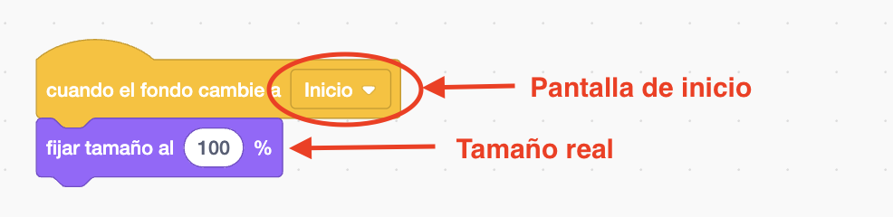
Haz clic sobre el bloque fijar tamaño al 100 % para que tu insecto "crezca" hasta su tamaño original.
Ahora, haz clic en el Escenario, luego en la pestaña Fondos y, finalmente, en el fondo inicio. Así verás la pizarra en tu zona de previsualización.
Ahora solo te queda añadir un bloque ir a x: y: para colocar el insecto en la pizarra. Para eso, primero tienes que arrastrar tu insecto hasta la pizarra para obtener las coordenadas x e y necesarias. Aquí vas a tener un problema:
Cuando intentes arrastrar el objeto insecto a su posición, el fondo se te va a cambiar a Spotlight y el insecto se va a "esconder". Esto ocurre porque se va a ejecutar el código que pusiste para cambiar al siguiente fondo y, al cambiarse el fondo a Spotlight, se va a ejecutar el código que pusiste en el evento cuando el fondo cambie a Spotlight. No te preocupes, todo se soluciona si vuelves a hacer clic en el insecto para reposicionarlo. Se volverá a cambiar el fondo a Inicio y tu insecto crecerá al ejecutarse el código que pusiste en el evento cuando el fondo cambie a Inicio.
Una vez tengas el insecto en su posición en la pizarra, añade el bloque ir a x: y: al evento cuando el fondo cambie a Inicio.
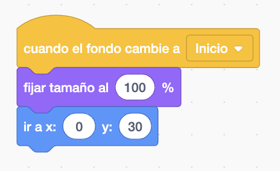
Prueba: Haz clic en la bandera verde para probar tu proyecto. Haz clic en el insecto para pasar al siguiente fondo. Debería ser grande en la pantalla de ‘Inicio’ y pequeño en el nivel de ‘Spotlight’.
3. Loro para distraer
Para que sea más difícil para los jugadores encontrar y hacer clic en el insecto, agregarás un loro molesto para distraerlos.
Agrega y anima tu objeto loro
Añade a tu proyecto un objeto Parrot (loro). Lo puedes encontrar en la categoría Animales:
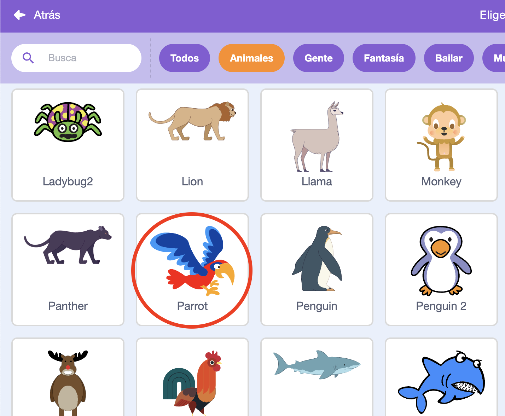
En el anterior proyecto Toma el autobús, usaste un bucle repetir. Aquí utilizarás un bucle diferente, un bucle por siempre, que ejecuta los bloques de código dentro de él una y otra vez. Es perfecto para un loro molesto que no para de volar y estorbar.
Añade en el bucle un código para hacer que el loro se mueva de una manera que distraiga. Puede ser algo como esto, pero prueba a cambiar algunos valores a ver qué pasa:
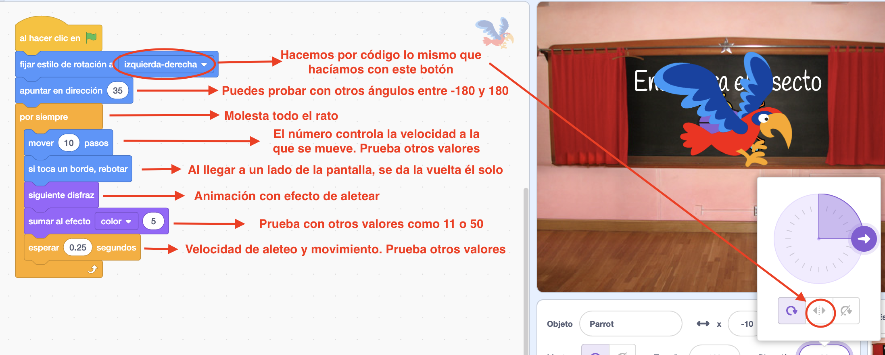
Consejo: Si el loro se vuelve demasiado molesto mientras codificas, puedes hacer clic en el botón rojo de parada que se encuentra sobre el escenario para detener la ejecución del código.
4. Segundo Nivel
Elegirás un fondo para crear un segundo nivel en tu juego y hacer que el insecto sea difícil de encontrar.
Añade otro fondo
Elige: Elige un fondo para tu segundo nivel. Yo he elegido Urban, pero puedes elegir el que más te guste. Recuerda que, mientras más detalles tenga el fondo, ¡más difícil será de encontrar el insecto!
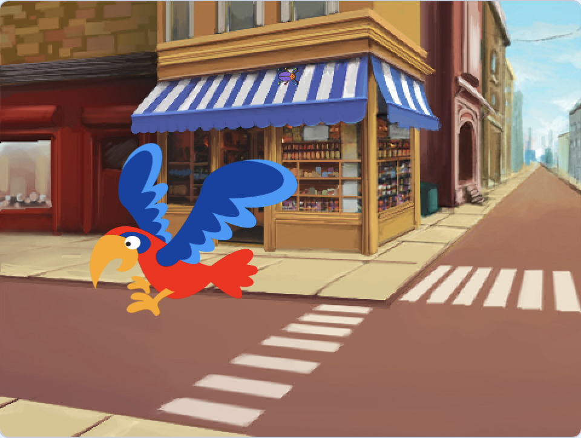
Esconde tu insecto
Para evitar que el fondo se te cambie todo el rato cuando intentes mover el insecto, desconecta un momento los bloques del evento al hacer clic en este objeto, de tu insecto.
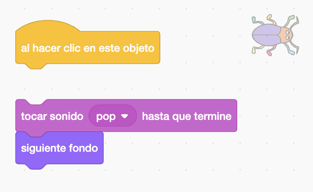
Mueve tu insecto a la posición en la que lo quieras ocultar, para que el bloque ir a x: y: adquiera las coordenadas que quieras.
Añade el código para que tu insecto se haga pequeño y se esconda en esta segunda pantalla:
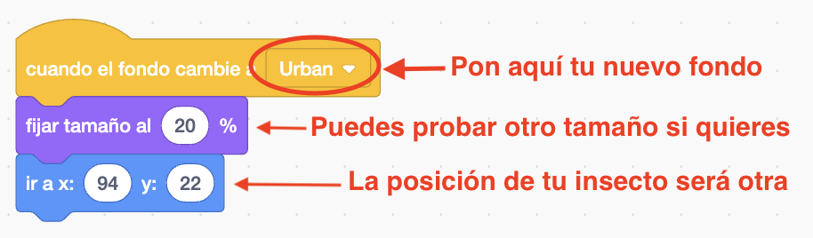
Vuelve a unir los bloques al evento al hacer clic en este objeto para que cuando se haga clic en el insecto, se cambie al siguiente fondo:
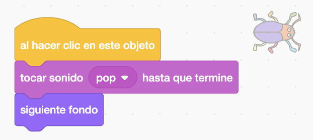
Prueba tu proyecto haciendo clic en la bandera verde. Cada vez que hagas clic en el insecto debe cambiar el fondo y moverse el insecto.
Es posible que el insecto se vea por delante del loro cuando este pase volando a su altura. Para evitar eso, vas a utilizar un bloque que te permite mantener un objeto por debajo de otros. Es el bloque ir a capa (está en la categoría de Apariencia) y puede tener dos valores:
- delantera: el objeto se pone por delante de cualquier otro objeto que haya a su altura (será siempre visible)
- trasera: el objeto se pone por detrás de cualquier otro objeto que haya a su altura (siempre lo taparán)
Como queremos que el loro tape al insecto, y vamos a poner el código en el objeto insecto, tendremos que poner al insecto en la capa trasera. Si solo ponemos ese bloque, cuando hagamos clic en el insecto puede que se vuelva a poner en la capa delantera. Para asegurarnos de que siempre está en la capa trasera, utilizamos un bucle por siempre. Lo ponemos en el evento al hacer clic en ⚑ y ya siempre se mantendrá en la capa trasera desde que iniciemos el juego.
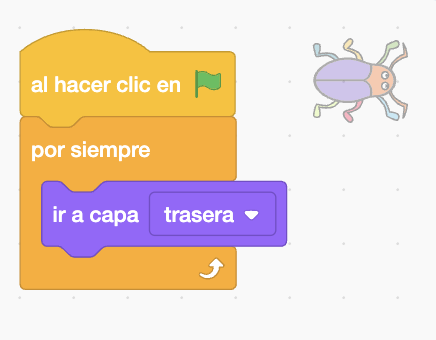
5. Pantalla final
Crearás una pantalla final para mostrar el tiempo en segundos que ha tardado el jugador en encontrar los insectos.
Para hacerlo más simple, la pantalla final la vamos a hacer igual que la de inicio. Así puedes comprobar que, en Scratch, se puede agregar el mismo fondo más de una vez, pero podrías utilizar una pantalla diferente para finalizar el juego.
Añade el fondo final
Añade un nuevo fondo y selecciona de nuevo el fondo Chalkboard.
Ve a la pestaña Fondos y cambia el nombre de este nuevo fondo a "Final", para que luego sea más intuitivo el código.
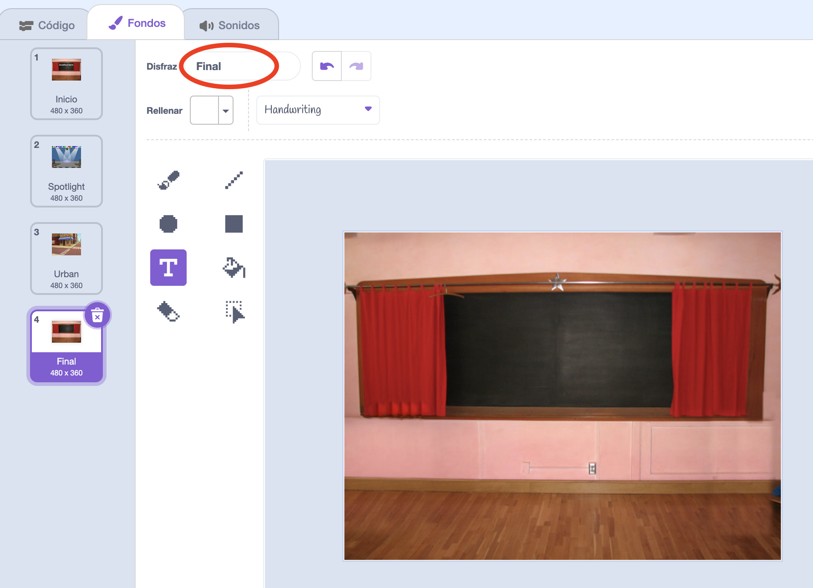
Reposiciona el insecto
Coloca el insecto en la pizarra y con su tamaño real. Para ello, haz clic en el insecto y añade el código en el evento cuando el fondo cambie a Final. Como el código va a ser el mismo que al pasar a la pantalla de inicio, puedes ahorrar tiempo duplicando los bloques de código y modificando solamente el nombre del fondo en el evento de cambio de pantalla.
Para duplicar bloques, utiliza el botón derecho del ratón sobre el bloque que quieras duplicar y elige "Duplicar" en el menú que aparece. Te enseño como hacerlo en una animación:
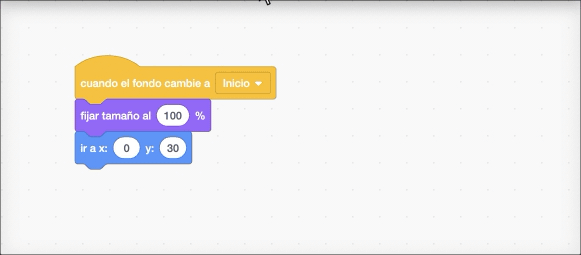
Añade un cronómetro
¿Cuánto tiempo te lleva encontrar y hacer clic en los insectos? Scratch tiene un cronómetro que puedes usar para averiguarlo.
El bloque cronómetro está en la categoría de bloques Sensores. Se pone en m archa automáticamente al iniciarse el programa. Añade el código para hacer al insecto decir el cronómetro al pasar a la pantalla ‘Final’:
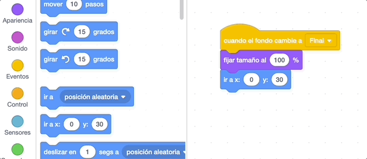
Prueba: haz clic en la bandera verde para probar tus habilidades de búsqueda. ¿Cuánto tiempo tardas en encontrar al insecto?
Para volver a la pantalla de ‘Inicio’, haz clic en el insecto en la pantalla ‘Final’.
Te habrás dado cuenta de que hay dos fallos:
- El insecto se queda diciendo el tiempo aunque pases de nuevo a la pantalla de Inicio.
- El tiempo cuenta desde que has iniciado el juego, no desde que has hecho clic en el insecto para empezar a buscarlo.
Te cuento como solucionar ambos fallos:
El insecto se queda diciendo el tiempo todo el rato
Añade código para que deje de decir el cronómetro en el evento cuando el fondo cambie a Inicio:
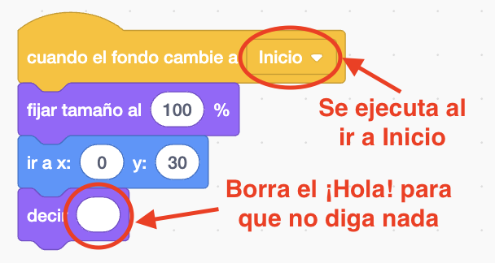
El tiempo cuenta desde que se inicia el juego
Puedes usar un bloque para reiniciar el cronómetro cuando quieras. Para que el juego funcione bien, tendríamos que empezar a contar nada más activarse el primer nivel. Por eso, el bloque de reiniciar cronómetro lo tienes que poner en el evento cuando el fondo cambie a Spotlight (o como se llame el fondo que pusiste para el primer nivel):
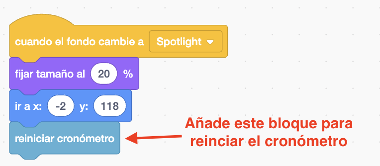
Prueba: haz clic en la bandera verde y juega el juego. El cronómetro debería reiniciarse cuando hagas clic en el insecto en la pantalla de ‘inicio’ para pasar al primer nivel. Al cliquearlo en la pantalla ‘Final’, se debe volver a la pantalla ‘Inicio’ y el insecto debe dejar de decir el tiempo.
TAREA FINAL. Mejora tu proyecto
Ahora vas a mejorar el juego haciendo lo siguiente:
Agrega, al menos, un nuevo nivel
Para cada nivel, necesitas:
- Agregar un fondo
- Hacer clic en el panel escenario, luego en la pestaña Fondos, luego arrastrar el nuevo fondo a la posición antes del fondo Final
- Agregar un bloque cuando el fondo cambie a para el nuevo fondo y añadir código para posicionar y camuflar el insecto en esa pantalla.
Cambia el color del insecto en cada nivel para camuflarlo aún más
Para cambiar el color, recuerda que puedes utilizar el bloque dar al efecto color el valor.
También puedes utilizar diferentes tamaños para despistar aún más al jugador.
Añadir otro objeto de distracción, además del loro.
Para añadir otro objeto de distracción:
Selecciona un objeto que incluya varios disfraces para poder animarlo (recuerda que, poniendo el puntero del ratón sobre la imagen de los objetos, se ve una previsualización de sus disfraces)
Puedes arrastrar el código del objeto Parrot al otro para que sea más rápido crear otro de distracción:
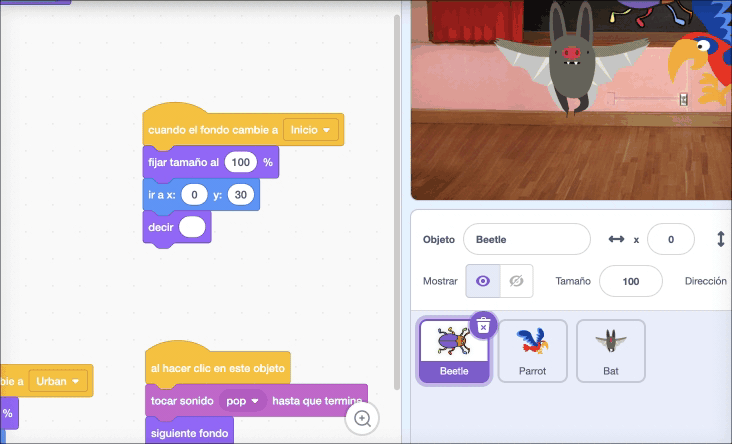
Acuérdate de modificar el código del nuevo objeto para que se mueva de forma distinta al loro y no vayan los dos a la vez por la pantalla.
Cuando hayas terminado todo, comparte tu proyecto e incluye su enlace en la tarea de Google Classroom.